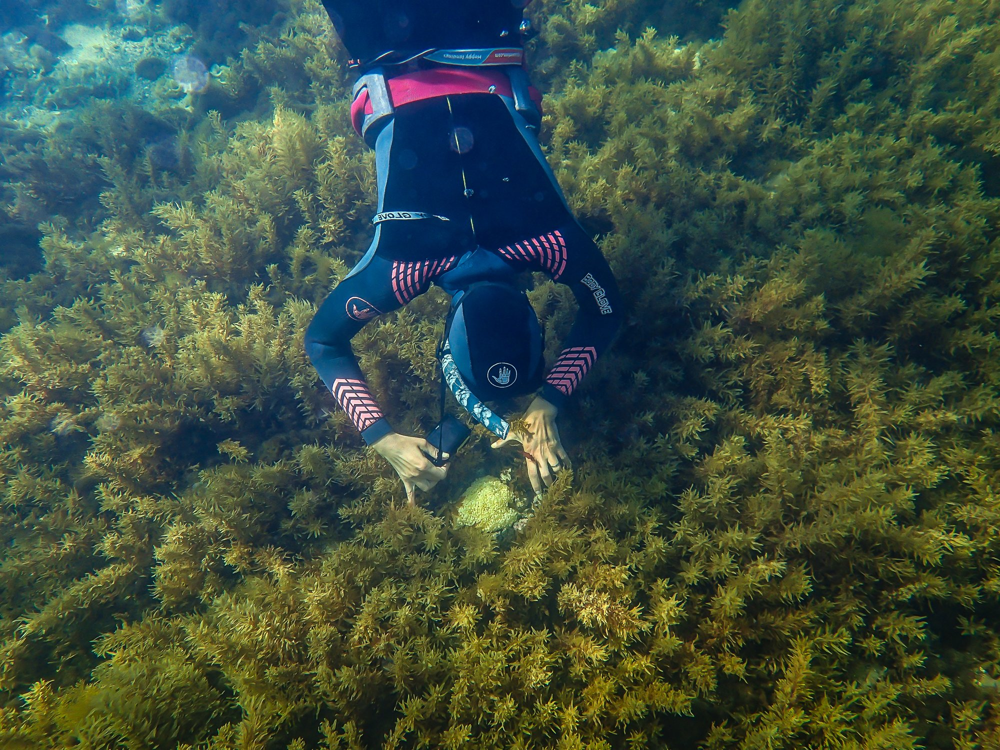
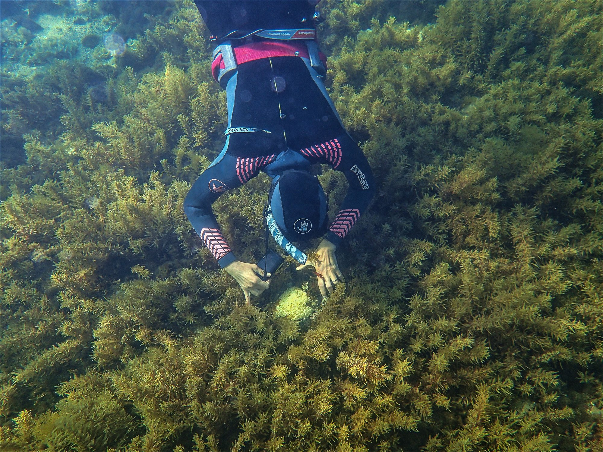
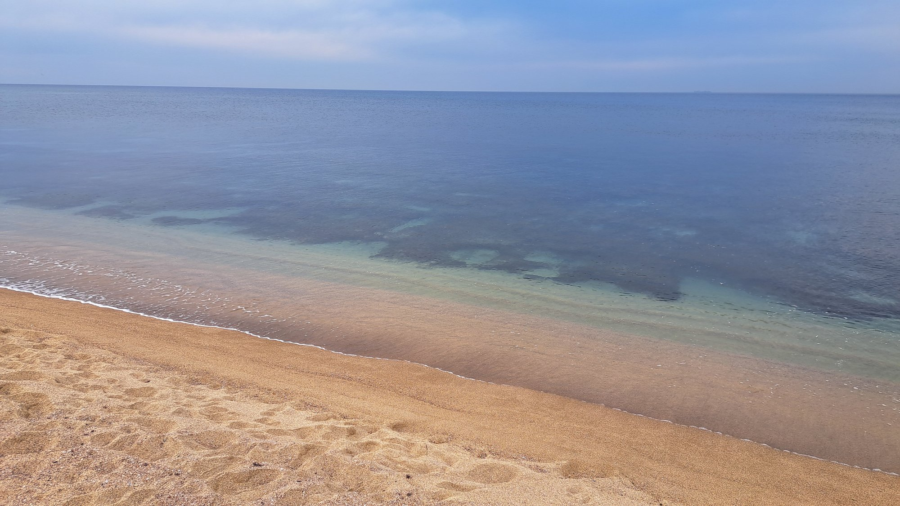

I held everything, very young
We moved from house to house, more homes than I can count. My parents had divorced when I was one, and my father had disappeared from my life. My mother was loving and dedicated, and also often nervous, often silent. From very early on, I was the one who held the house together.
The sea was my mother's medicine
My mother took us to the sea, again and again. The water was her own healing, her way of finding steadiness, and so, without anyone ever naming it, the sea became part of who we were. It was always there for us: a place to steady ourselves, and come back to calm.
Nature never left me
I always looked for companionship in nature. When we moved to a countryside village, when I was nine, I began to hike alone in the forests for hours. It was the first place my head went quiet, the place I felt most safe. Whenever I was stressed, I would lie down under a big, living tree, and let the earth and its roots hold me. I always felt better afterwards, in my body and in my heart.
I carried everyone, my emotional needs went unmet
There was always someone to take care of, my grandmother, my sister, the house, everyone around me. My physical needs were met, but my emotional needs often went unanswered. It took me years to understand that my mother was carrying her own trauma.
On the outside, I was thriving
In my early twenties, I found marine biology, and I found joy. I gave myself fully to it, building conservation projects, and earning my PhD as a research scientist. The very resilience my struggles had built made me good at hard problems: I could stay with the big, difficult questions in science until they gave way. But these professional achievements never made me feel calmer, or happier.

Inside, I thought something was wrong with me
All this time, I was living in two worlds. Outside: strong, ambitious, successful. Inside: struggling with low self-worth, big emotions I couldn't manage, and relationships that kept hurting, and an underlying feeling that something was wrong with me.
I broke down
After another breakup, I broke down, body and mind. I stopped eating. I couldn't work. For a while, I couldn't find a reason to live. It was the lowest I have been.
My body began to speak
A door opened when I stopped trying to think my way out, and let my body speak. In one body-work session, a memory surfaced: at the age of one, the year my father left, I had stopped eating for a few weeks. All at once, everything made sense. The trauma of abandonment was repeating itself, in every relationship, every breakup. My body had known all along. I just couldn't hear it.
The sea gave me back to myself
At thirty-two, lost and trying to find myself again, I moved to live by the sea. I swam almost every day. In the water there was no past and no future, I was fully in the present. Creativity returned. Happiness woke up, especially the day a sea turtle swam beside me. I grew up with the sea always near, but now I built a real, daily relationship with it. It made me feel so much better, and it made me want to give back. I became an ocean protector: leading community conservation projects, promoting marine protected areas, and fighting plastic pollution.

How it feels
Nothing brings me into the now more than being in the water. The sensation of it all over my body, touching every single cell, takes past memories and future worries away. I'm right here, right now, alive, whole. I can feel the essence of my being, beyond any story, title, conditioning, or definition.
In the wide-open space of the ocean I laugh, I cry, I rage, I rest. The ocean is my doctor, a vast container, an active conductor. The healing is beyond words; it's a physical experience. Floating on the surface, the way I once watched my mother float, I let it cradle me and carry the weight of my life, the memories, the challenges. Nothing is too big for it to hold.
The only difference is that I was given the courage not just to float, but to learn to dive, and go deeper. Science taught me to explore, to question, to observe, and to uncover the hidden secrets of the ocean, and of myself.
Saying goodbye to my mother
When I was thirty-four, I lost my mother. Before she passed, I took her to snorkel one last time. The sea was always her medicine, giving her strength and courage. There, held by the water, we were able to make a deep and final peace in our physical journey on this earth. Her spirit, her love, and her courage are with me still, all along the way.

Finally, a name for it all
For a long time, relationships stayed the hard part. I had friends and community, but in my relationship with my partner there was no peace, I was insecure, easily triggered, always a little alert. I went back to therapy; there was a little progress, and then it ended in another abandonment, another disappointment. And then I heard about Complex PTSD. I did what a scientist does, I read everything I could find. Suddenly there was a name for what I had struggled with my whole life. The same rigorous mind I had trained on the ocean, I was finally turning on myself, and it was an enormous relief to begin to understand what was happening in my own brain and body.
Bessel van der Kolk has written that scientists are often drawn to study what is closest to their own hearts. As the saying goes: all research is me-search.
Becoming a mother, breaking the cycle
Becoming a mother was my deepest wish, and a big fear came with it. More than anything, I did not want to pass my pain onward; the will to break the cycle became a powerful engine. To be the best mother, and the best version of myself, I threw myself into understanding healing, what truly works for childhood trauma, and what doesn't. And we brought our child into the world.
Building the foundations
I built strong foundations, a daily practice for body, mind, and spirit that truly made a difference. For the first time, I understood how to work with my own nervous system, to rewire my brain, and this time, to choose the path I wanted to walk. Before long, I was experiencing myself in a way I never had: calm, regulated, connected, more and more happy, creative, and hopeful. Nature and the sea had always been open gates for me. Now, at last, I knew how to walk through them, on purpose, for my own healing.

Why I do this
I'm still walking this path, but I'm home in myself in a way I never was. I am a happy woman, a mother, and a partner. I bring all of my experience and natural gifts to this work, the scientist who understands how the natural world works, the woman who healed in it, and the empathy, motivation, and leadership to help others heal and prosper. If your past is still shaping your present, I'd be glad to walk part of the way with you.